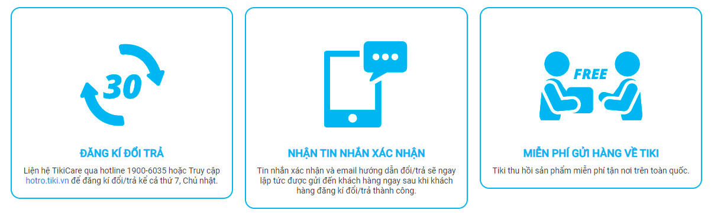

Chính sách đổi trả sản phẩm tại Tiki như thế nào?
Tại Tiki, chúng tôi trân trọng sự tin tưởng của khách hàng khi đặt mua sản phẩm. Chính sách hậu mãi ở Tiki được xây dựng dựa trên cam kết bảo vệ quyền lợi người tiêu dùng để quý khách có thể yên tâm mua sắm và trải nghiệm dịch vụ. Tiki đảm bảo sản phẩm được bán tại Tiki là sản phẩm mới và 100% chính hãng. Trong trường hợp hiếm hoi sản phẩm quý khách nhận được có khiếm khuyết, hư hỏng hoặc không như mô tả, Tiki cam kết bảo vệ khách hàng bằng chính sách đổi trả và bảo hành.
THỰC HIỆN ĐỔI TRẢ VỚI 03 BƯỚC CỰC KÌ ĐƠN GIẢN
| KỂ TỪ KHI TIKI GIAO HÀNG THÀNH CÔNG | SẢN PHẨM LỖI (do nhà cung cấp) | SẢN PHẨM KHÔNG LỖI(*) | SẢN PHẨM LỖI DO NGƯỜI SỬ DỤNG | |
| Điện Thoại - Máy Tính Bảng, Điện Lạnh, Tivi, Máy ảnh - Máy quay phim, Laptop. | 7 ngày đầu tiên | Đổi mới Trả không thu phí | Không hỗ trợ đổi/ trả | Bảo hành hoặc sửa chữa có thu phí theo quy định của nhà cung cấp. |
| 8 - 30 ngày | Bảo hành | |||
| 30 ngày trở đi | Bảo hành | |||
| Điện Thoại - Máy Tính Bảng, Điện Lạnh, Tivi, Máy ảnh - Máy quay phim, Laptop. | 7 ngày đầu tiên | Đổi mới Trả không thu phí | Trả không thu phí | Bảo hành hoặc sửa chữa có thu phí theo quy định của nhà cung cấp. |
| 8 - 30 ngày | Bảo hành | |||
| 30 ngày trở đi | Bảo hành | Không hỗ trợ đổi/ trả | ||
| Sản phẩm xe máy, xe máy điện | Chỉ áp dụng bảo hành, không áp dụng đổi trả | |||
| Voucher/ E-voucher dịch vụ | 30 ngày đầu tiên | Đổi mới | Không hỗ trợ đổi/ trả | Không hỗ trợ đổi/ trả |
| Trả không thu phí | ||||
| 30 ngày trở đi | Không hỗ trợ đổi trả | |||
| Thực phẩm tươi sống: Thịt, Hải sản, Rau củ, Trái cây, Thực phẩm đông lạnh, Thực phẩm chế biến sẵn, Bơ sữa & Trứng | Tại thời điểm nhận hàng | Trả không thu phí | Không hỗ trợ đổi/ trả | |
| Thực phẩm tươi sống: Các sản phẩm còn lại | 24 giờ | Trả không thu phí | Không áp dụng đổi/ trả | |
| Đối với các ngành hàng còn lại | 30 ngày đầu tiên | Đổi mới | Trả không thu phí | Không hỗ trợ đổi/ trả |
| Trả không thu phí | ||||
| 30 ngày trở đi | Không hỗ trợ đổi/ trả | |||
(*) Chỉ áp dụng khi sản phẩm đáp ứng đủ điều kiện theo chính sách.
| DANH MỤC | SẢN PHẨM |
|---|---|
| Điện thoại - Máy tính bảng - Laptop | Điện thoại, máy tính bảng, laptop |
| Thiết bị số - Phụ kiện số - Thiết bị IT | Sản phẩm đã được kích hoạt bảo hành, đã tháo seal, qua sử dụng, sao lưu dữ liệu,... |
| Máy ảnh - Máy quay phim | Tất cả sản phẩm trong danh mục https://tiki.vn/may-anh |
| Tivi | Tất cả sản phẩm Tivi |
| Điện lạnh | Tủ lạnh, máy giặt, máy lạnh - máy điều hòa, máy nước nóng, máy sấy quần áo, máy rửa chén, tủ đông - tủ mát, tủ ướp rượu |
| Thời trang | Đồ lót, Đồ bơi, Đồ ngủ, Đồ bộ, trang sức Giày dép thuộc thương hiệu: Converse, Vans Thương hiệu đồng hồ của một số nhà bán: - Nhà bán Đồng Hồ Tân Tân: BULOVA, CARAVELLE, Citizen, CITIZEN (Japan), Movado, Tissot. - Nhà bán Nguyên Vạn Lộc (Nguyen Van Loc): Adriatica, ANNE KLEIN, Armitron, Jazma, LACOSTE, Obaku, Sonata, STORM, Titan, TOMMY HILFIGER. Hàng thời trang thuộc nhãn hiệu Mango |
| Làm đẹp - Sức khỏe | Nước hoa |
| Sản phẩm cho mẹ & bé | Sữa, bột ăn dặm, các loại thực phẩm, thức uống cho mẹ và bé Đồ lót, đồ bơi của bé |
| Sách | Báo, tạp chí, các ấn phẩm định kỳ Băng đĩa CD/DVD |
| Voucher -Dịch vụ | Tất cả sản phẩm trong danh mục Voucher - Dịch vụ |
| Xe Máy, Ô tô, Xe Đạp | Xe máy, xe máy điện, xe đạp điện, xe đạp. |
| Thực phẩm tươi sống | Thịt, Hải sản, Rau củ, Trái cây, Thực phẩm đông lạnh, Thực phẩm chế biến sẵn, Bơ sữa & Trứng |
| Rượu - Đồ uống có cồn | Rượu |
| Sản phẩm khác | Sản phẩm khuyến mại, tặng kèm, thanh lý. Hàng mua tại các sự kiện Offline. Sản phẩm có thông tin chi tiết không áp dụng đổi trả (Tissot, Citizen, Titan, Obaku...). Sản phẩm mua với hình thức thanh toán trả góp. |
- Chính sách đổi trả hàng giao từ nước ngoài: Xem thêm tại đây
- Quý khách vui lòng thông báo cho TikiCare khi:
+ Sản phẩm có lỗi ngoại quan (trầy xước, hư hỏng bên ngoài, bể vỡ): 48h kể từ khi nhận hàng thành công.
+ Sản phẩm giao sai hoặc giao thiếu: 7 ngày kể từ khi nhận hàng hàng thành công.
- Quý khách cần chuẩn bị thêm các bằng chứng để đối chiếu/ khiếu nại về sau như:
+ Video clip mở kiện hàng từ lúc bắt đầu khui ngoại quan đến kiểm tra sản phẩm bên trong thùng hàng.
+ Hình chụp tem kiện hàng có thể hiện mã đơn hàng.
+ Tình trạng ngoại quan (băng keo, seal, hình dạng thùng hàng) đặc biệt các vị trí nghi ngờ có tác động đến sản phẩm.
+ Tình trạng sản phẩm bên trong.
- Để đảm bảo quyền lợi khách hàng và Tiki có cơ sở làm việc với các bộ phận liên quan, tất cả yêu cầu đổi/ trả/ bảo hành quý khách cần cung cấp hình ảnh/ clip sản phẩm lỗi. Quá thời gian đổi/ trả sản phẩm nếu chưa nhận được đủ hình ảnh/ clip từ quý khách, Tiki xin phép từ chối hỗ trợ. Bên cạnh đó, quý khách cần quay video clip đóng gói sản phẩm để làm bằng chứng đối chiếu/ khiếu nại liên quan đến đổi trả về sau (nếu cần).
- Bên cạnh chính sách chung về thời gian và điều kiện đổi trả, quy định đổi/trả/bảo hành các sản phẩm thuộc nhóm Quà tặng kèm, Sản phẩm/ Dịch vụ mua kèm, Mua kèm giảm thêm có thêm một số điều kiện như sau:
| QUÀ TẶNG KÈM | SẢN PHẨM MUA KÈM/ MUA KÈM GIẢM THÊM | |
|---|---|---|
| Sản phẩm lỗi (do nhà cung cấp) | Đổi (sản phẩm chính bị lỗi) hoặc Trả nguyên bộ | Đổi sản phẩm lỗi hoặc Trả nguyên bộ |
| Sản phẩm không lỗi | Trả nguyên bộ | Trả nguyên bộ |
Lưu ý: - Không áp dụng đổi/trả/bảo hành với sản phẩm quà tặng.
- Chỉ hỗ trợ trả hàng nếu quà tặng/sản phẩm mua kèm/sản phẩm mua theo gói còn nguyên mới và được gửi lại đầy đủ.
- Các trường hợp bảo hành sẽ theo chính sách bảo hành của nhà bán/nhà sản xuất.
Ngày hiệu lực 19/03/2010, cập nhật lần cuối 05/05/2020.

Trending Articles
Chính sách bảo hành tại Tiki như thế nào?Điều khoản sử dụng
Chính sách đổi trả sản phẩm tại Tiki như thế nào?
Làm thế nào để tôi đăng ký xuất hóa đơn khi mua hàng tại Tiki?
Làm cách nào để sử dụng Tiki Xu và mã giảm giá trên website ?
Trending Articles
Làm thế nào để tôi đăng ký xuất hóa đơn khi mua hàng tại Tiki?Làm cách nào để sử dụng Tiki Xu và mã giảm giá trên website ?
Làm thế nào để tôi đặt hàng qua website Tiki?
Tiki hoàn tiền trong bao lâu?
Tiki Xu là gì? Giá trị quy đổi như thế nào?